La película de la campaña electoral toca a su fin y , a juzgar por la variedad de sus contenidos , podría pertenecer a cualquier género cinematográfico , con una larga lista de anécdotas y una llamativa ausencia de palabras gruesas.
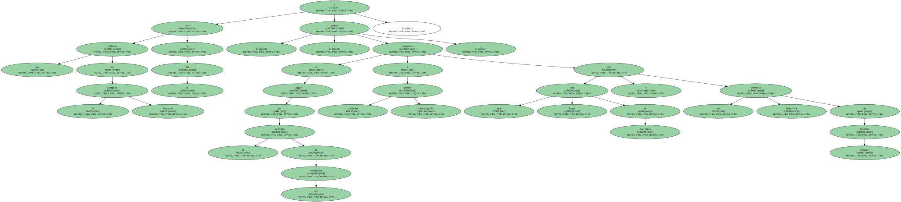Al menos esta vez , el sentido del humor se impuso a los insultos.
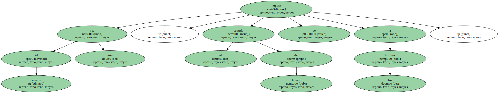La campaña comenzó con un cumpleaños presidencial.
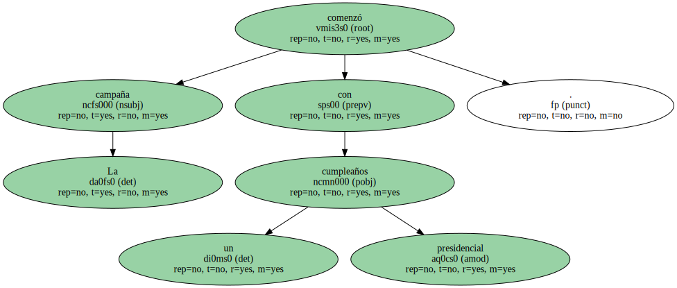El candidato del PP , José María Aznar , fue recibido en Murcia con el " cumpleaños feliz " y una tarta con las velas correspondientes.
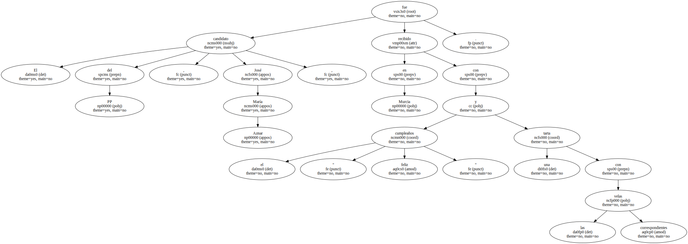El candidato socialista , Joaquín Almunia , se ha dedicado a explicar " la cosa " , o lo que es lo mismo , el pacto PSOE-IU , por más de medio centenar de actos públicos.
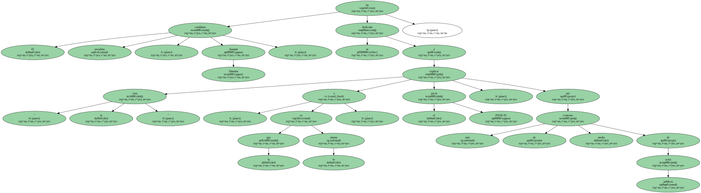Su " aliado " Francisco Frutos ha paseado también su " Carisma " por toda la geografía española.
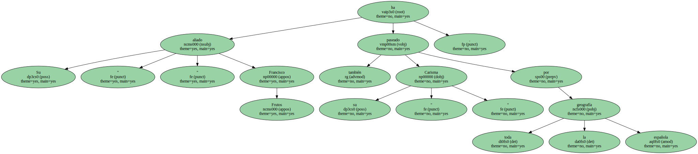El " Carisma " de Frutos se mueve sobre cuatro ruedas y pertenece a una conocida marca japonesa.
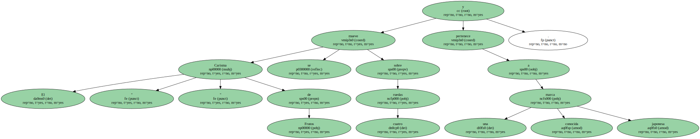Se trata del modelo de coche elegido por el candidato de IU para viajar por toda España y que en la caravana electoral ha servido para hacer juegos de palabras nunca malintencionadas.
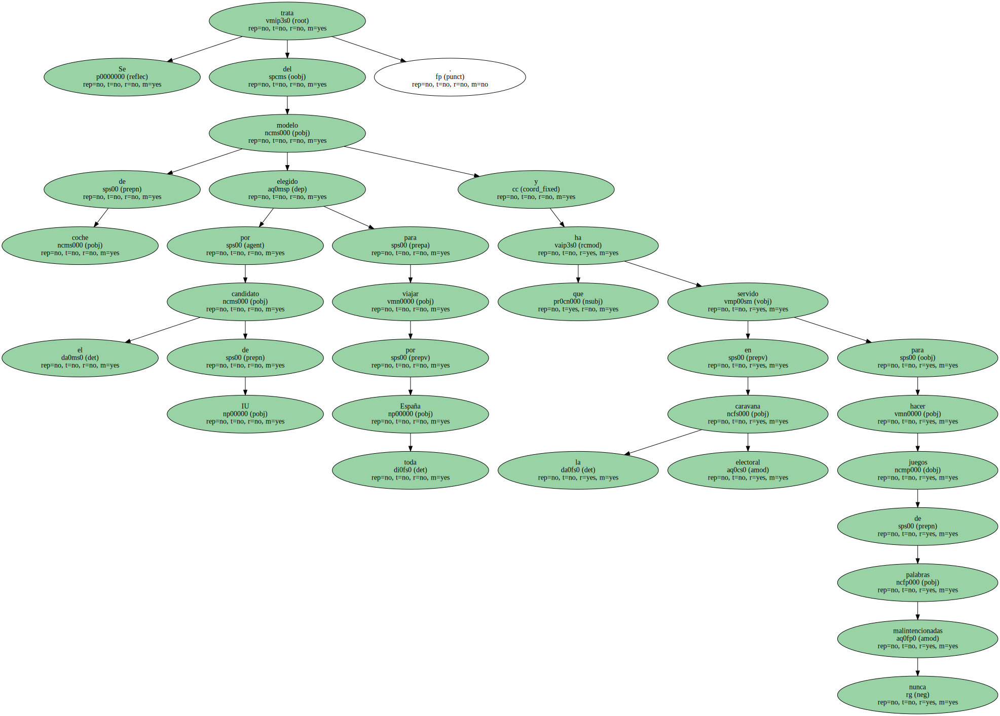A medida que pasan los días , la campaña continúa y las palabras suenan cada vez más fuerte.
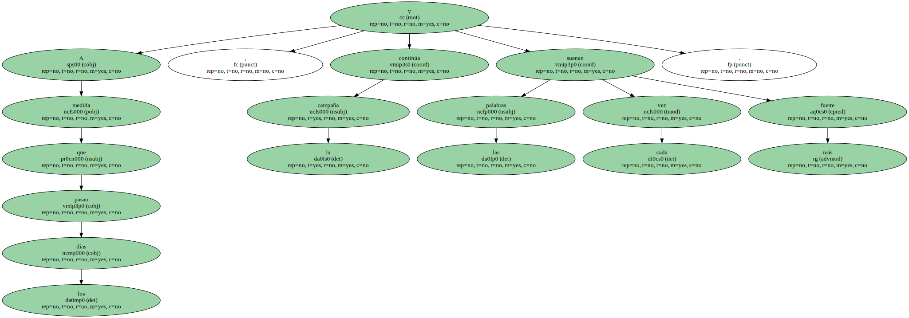En Baleares , Aznar recurre a una cita del Conde de Romanones - " joder , qué tropa " - para criticar la variedad de proyectos del PSOE.
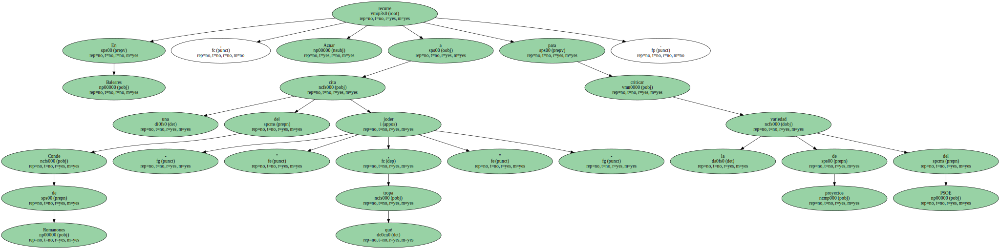Pero no todo es mitin o discurso.
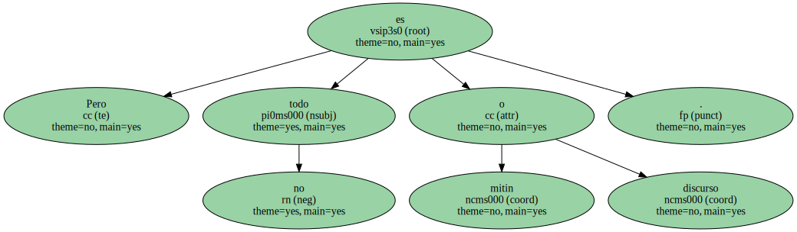El presidente del Gobierno aprovecha sus ratos de descanso para practicar deporte.
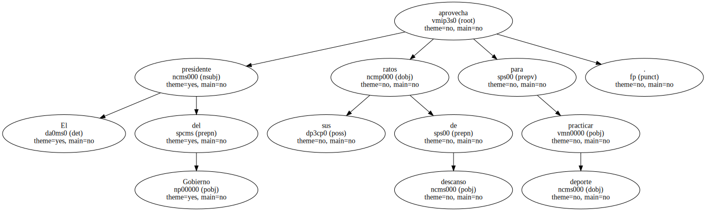En Almería , mientras corre por la playa , unos paseantes no dan crédito a lo que ven sus ojos : " ¿ usted es ... ? ".
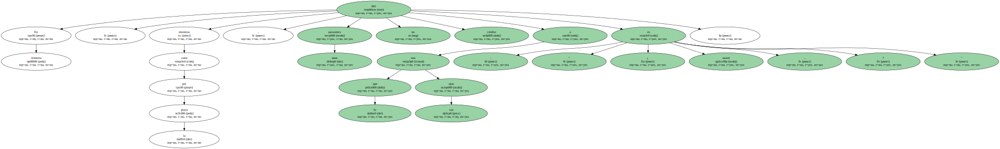" Si , toca , toca ".
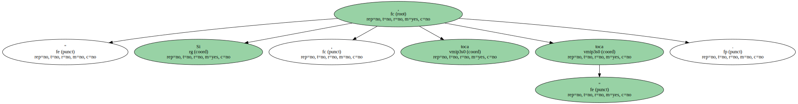Un diálogo breve pero aprovechable.
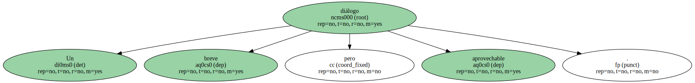La expresión " toca , toca " es utilizada por Aznar horas más tarde para contar la anécdota en el mitin y explicar que su política durante estos cuatro años se puede palpar.
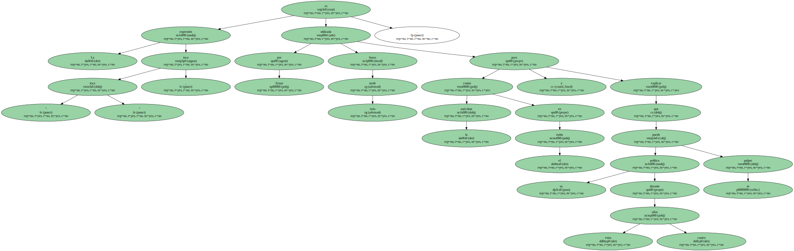Almunia , durante su recorrido , protagoniza también secuencias de lo más variopintas.
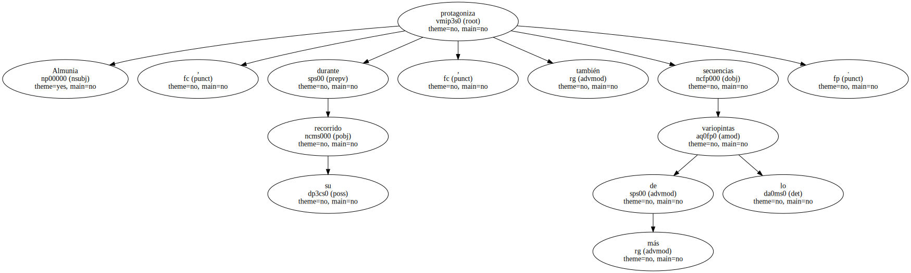Una gitana le pide una flor en un mercadillo de Valladolid para luego advertirle en tono insinuante : " no creas que por esto te voy a votar ".
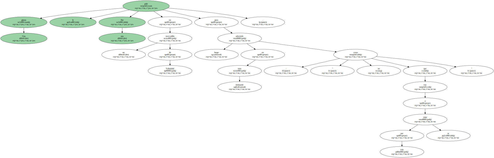Y después del reproche , una buena dosis de cariño : un ama de casa impulsiva le planta un sonoro beso en la calva en un mercado del barrio madrileño de Usera.
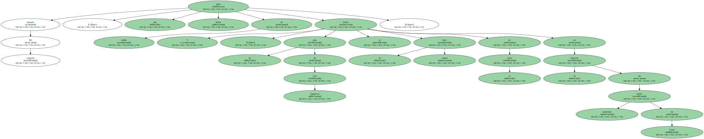Almunia reconoce que en los pocos metros que recorre abriéndose paso entre la gente hasta el escenario de los mítines , ha escuchado piropos y que los achuchones , a veces , van más allá de la correcta relación candidato-ciudadanas.
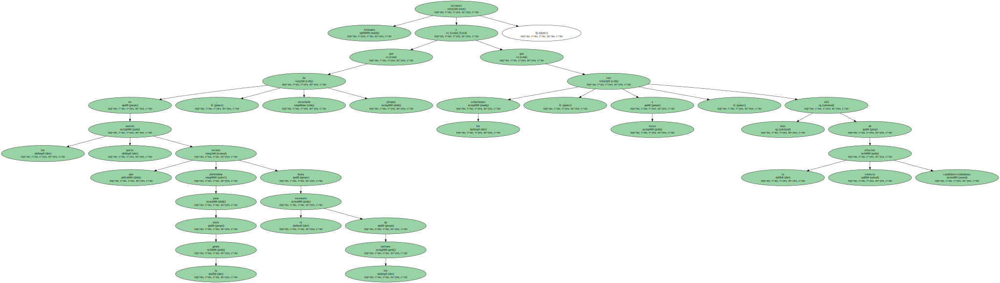Debe de ser la erótica de la política , que el propio candidato llevó al extremo en Murcia , donde , ironizando sobre la manera con la que Aznar denomina al pacto PSOE-IU ( la " cosa " ) , Almunia defendió la transparencia de ese acuerdo frente a la falta de concreción de los aliados de Aznar : " ¿ Cómo es su cosa ? , ¿ dónde tienen su cosa ? ... " , fue preguntando el candidato socialista a un auditorio cada vez más divertido.
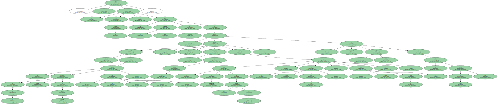" La tienen oculta en las cuevas " , se contestó en medio de carcajadas y pitidos al presidente de la CEOE.
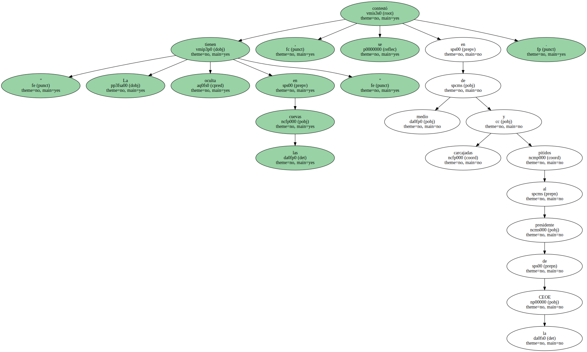Frutos también defiende " la cosa " allá donde quiera que va.
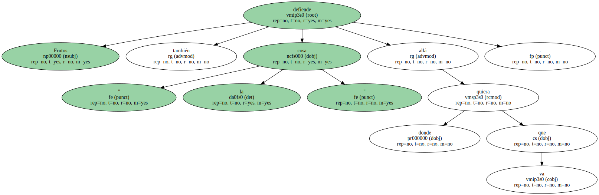Lo que no se sabe es si también le ofrece explicaciones al respecto al ministro de Economía , Rodrigo Rato , con quien coincide en la clase turista de un vuelo a Asturias.
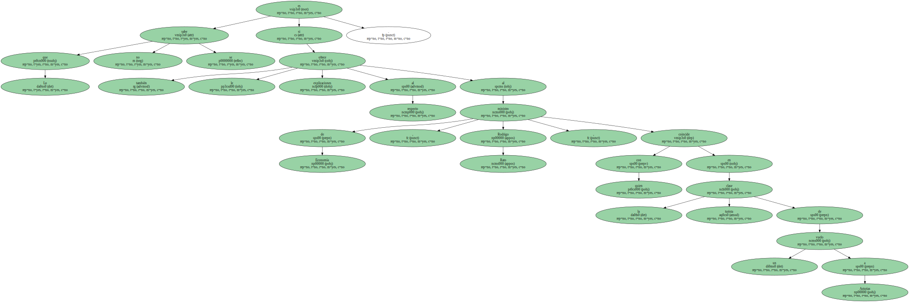Pero donde sí lo comenta fue en Córdoba , donde , lejos de renegar de trayectoria en el PCE manifiesta , mientras sostiene una bandera de la Comunidad Andaluza , que su enseña preferida es la bandera roja.
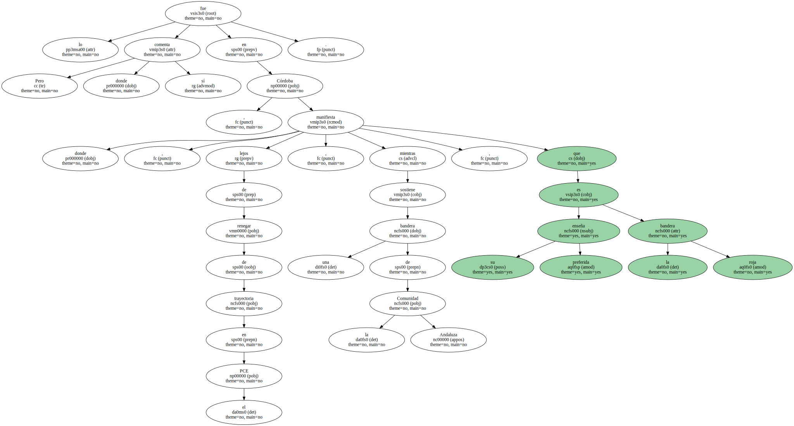Y mientras los candidatos van sumando kilómetros y kilómetros , la campaña se va agotando , pero los líderes parecen mantener el físico como el primer día.
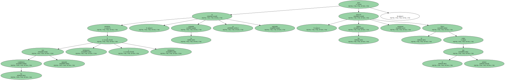Aznar asegura que todavía está en forma cuando en Málaga se ve obligado a hacer un giro de cintura para poder ver a todo el público que le rodea.
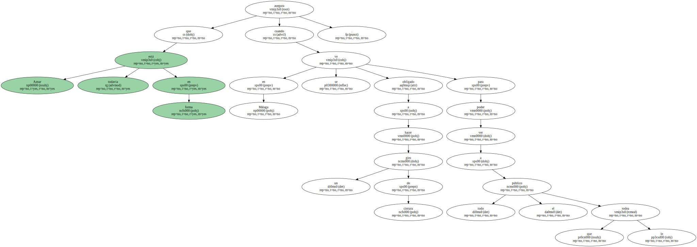Sin embargo la originalidad destaca en Canarias , donde el candidato de Coalición Canaria al Congreso por Tenerife , Paulino Rivero , aprovecha los carnavales para hacer declaraciones a favor de su partido ataviado de pirata , pañuelo anudado en la cabeza , pendiente , parche en el ojo y loro al hombro.
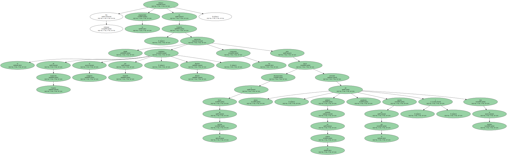El presidente de Canarias , Román Rodríguez , no le fue a la zaga y , disfrazado de Napoleón , se paseó el Sábado pasado por Las Palmas de Gran Canaria cuando las encuestas auguraban que el PP sería el partido más votado en Canarias y CC y el PSOE empataban.
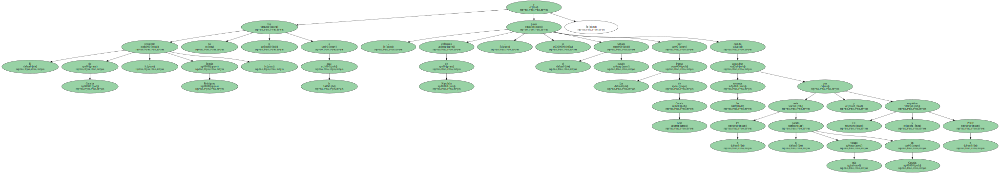La candidata al Congreso por el PP por la provincia de Las Palmas , María Bernarda Barrios , conocida en las islas como " Nardy " , se ha montado su propio dispositivo electoral , que ella misma denomina el " Nardy-Móvil " y que consiste en un peculiar vehículo en el que se traslada a barrios , pueblos y pedanías para pedir el voto.

Para electores más alternativos se presenta el Partido del Karma Democrático ( PKD ) , con Bosco San Martín a la cabeza , que reivindica " la figura del inútil como elemento humano libre pensador con sus virtudes y sus defectos " y pide su voto para desarrollar su programa electoral que se centra en " la pasta ( gansa ) , el vino ( Bueno ) y el sexo " con la intención de promover el " humor desaprensivo ".